Общие сведения о С
Пример простейшей программы
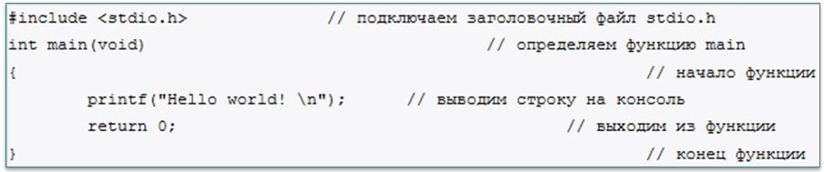Общая структура программы
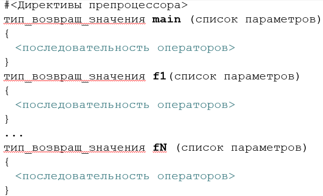Все программы на С состоят из функций.
Функция main() − обязательна.
При выполнении программы main() вызывается первой и должна содержать схему работы программы.
Функции f1(), …, fN() определяются пользователем.
Тело функции main() (и других функций и управляющих структур в С) заключается в фигурные скобки {}.
return − это оператор возврата из функции.
Директивы препроцессора
- Препроцессор перед компиляцией обрабатывает текст программы на основе директив:
- #include – подключение к программе заголовочных файлов: #include <stdio.h> – стандартные функции ввода-вывода
- #define – создание макроконстанты, действие которой распространяется на весь файл: #define PI 3.1415927
#include <math.h> – математические функции ввода-вывода
Локализация и кириллица в консоли
- Необходимо явным образом задать текущую локаль (культуру)
- В С используют функцию
setlocale(), определение которой имеется в заголовочном файлеlocale.h
Типы данных (простые)
Базовые типы данных С
- Тип данных − характеристика набора данных, определяющая:
- диапазон возможных значений данных из указанного набора и их представление
- допустимые над данными значениями операции
- способ хранения этих значений в памяти
Модификация основных типов данных
- Основные типы данных (искл.
- signed
- unsigned
- long
- short
void) могут иметь различные модификации для более точной настройки:
Переменные. Объявление (декларация) и инициализация
Все переменные должны быть объявлены (декларированы) до своего использования.
Общий вид объявления переменной:
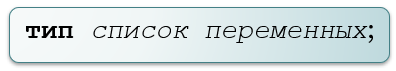
Примеры:

Инициализация предполагает задание начального значения непосредственно во время объявления переменной. Общий вид инициализации:
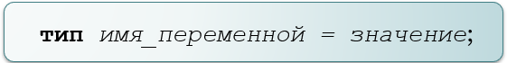Примеры:
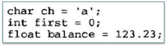Константы
Константами (constants) называются фиксированные значения, которые программа не может изменить. Способ представления константы зависит от ее типа. Иногда константы также называют литералами (literal).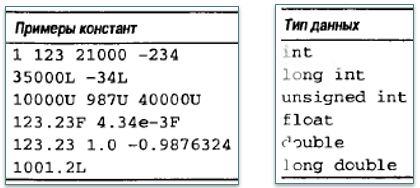
Для представления шестнадцатеричных констант перед числом указывается префикс 0х
Восьмеричные константы начинаются с нуля.
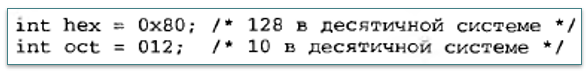
Символы и строки
- Строка (string) — это последовательность символов, заключенная в двойные кавычки. Например, “пример строки” — это строка.
- В языке С можно определять строковые константы, но нет отдельного типа данных для строк. (В языке C++ существует стандартный класс string.)
- Не следует путать символы и строки. Отдельная символьная константа заключается в одинарные кавычки, например 'а'. Если заключить букву а в двойные кавычки, получим строку "а", состоящую из одной буквы.
Операторы и операции
Оператор присваивания можно использовать в любом корректном выражении
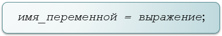
Множественное присваивание:
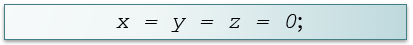
Арифметические операции:
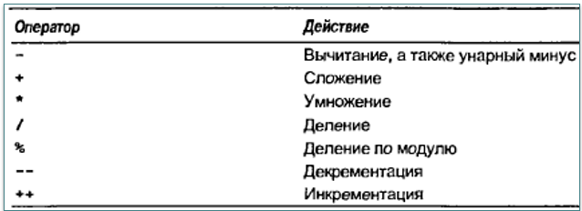
Приоритет арифметических операций:
- ++ --
- - (унарный минус)
- * / %
- + -
Преобразование типов данных
Правило преобразования типов оператора присваивания: значение правой части преобразовывается к типу левой части:
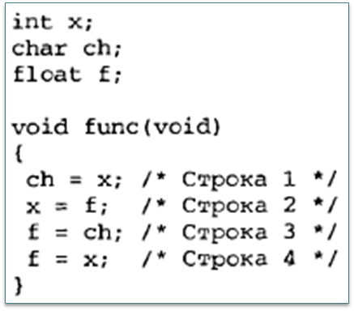
Вывод данных
Ввод и вывод данных. Стандартные функции вывода информации
Функции ввода-вывода, определенные стандартом языка С, используют заголовочный файл
stdio.h. В программах на языке C++ можно применять<cstdio>Стандартные функции вывода информации
- Часто применяют:
puts(S)– вывод строки символов S с переходом на начало новой строкиprintf(const char * управляющая_строка, список_вывода)
- Управляющая строка состоит из:
- управляющих символов;
- спецификаторов формата.
Спецификаторы формата
Количество аргументов в списке вывода
printf()должно совпадать с количеством спецификаторов формата, указанных в управляющей строке, причем они попарно сравниваются слева направо. Например, вывод двух чисел, целого - переменная n, с плавающей точкой - перемення x:printf("Значение n = %d, значение x = %f", n, x);Основные спецификаторы формата:
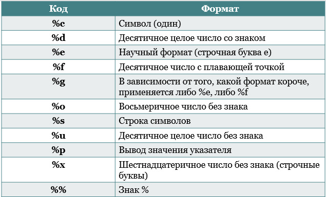
Управляющие символы
Управляющие символьные константы:
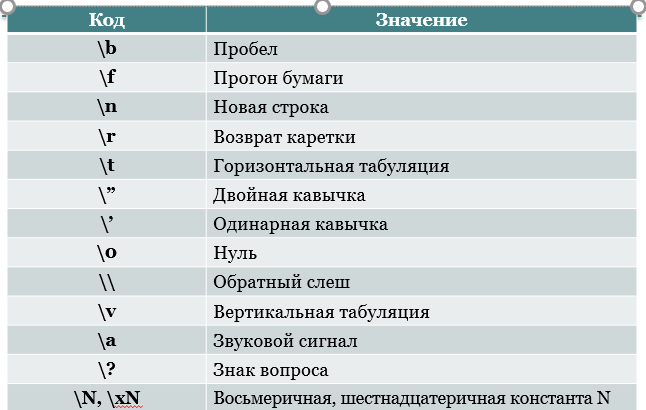